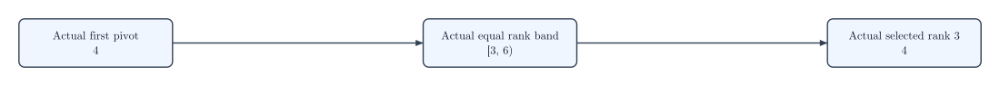
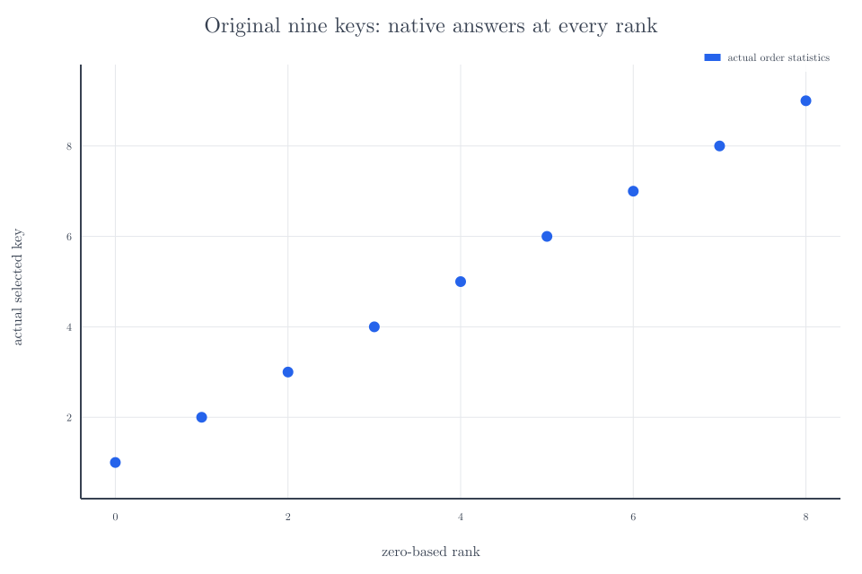
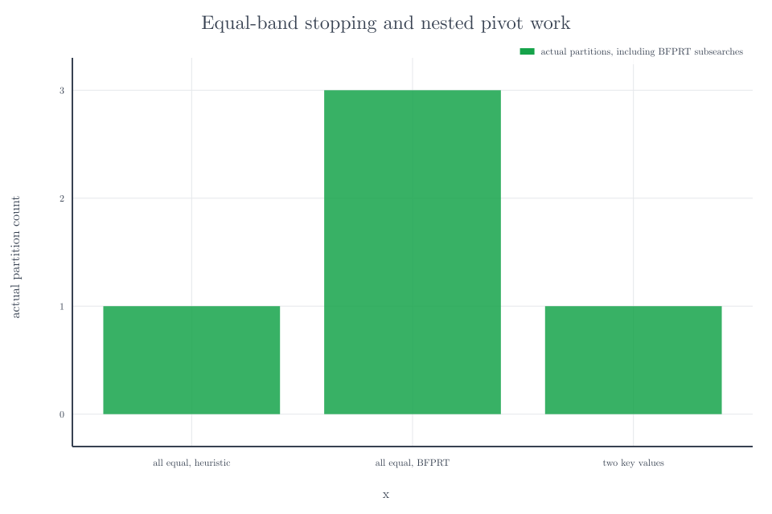
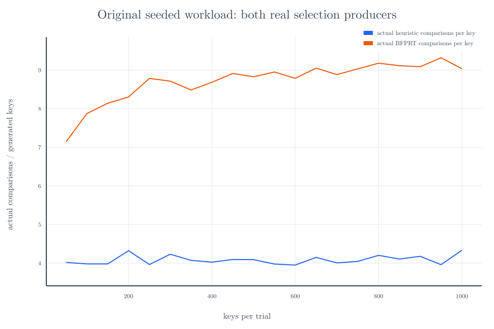

Quickselect: actual three-way bands and duplicate-safe median-of-medians
Abstract
An order statistic asks for one ranked key without sorting every key. Quickselect discards the strict partition that cannot contain that rank and stops anywhere inside the equal-pivot band. Actual native partitions replace the old report-local counting algorithm. The original nine-key queries, ascending fifteen-key median and seeded60-trial scaling workload remain; both pivot strategies now handle duplicate bands directly.
Mechanism and mathematical scope
A partition of \([l,h)\) produces three contiguous regions,
The loop maintains these regions plus an unclassified suffix; a swap classifies at least one item per iteration. If the requested absolute rank lies in the equal region, its value is already known. Otherwise the rank remains in exactly one strict child. This proves selection correctness by induction on shrinking ranges, including repeated keys.
Median-of-three is deterministic and has quadratic adversarial worst cases. BFPRT sorts groups of five, selects the median of group medians using the same three-way producer, and discards a constant strict fraction unless an equal band already contains the answer. Its recurrence is bounded by \(T(n/5)+T(7n/10+O(1))+O(n)=O(n)\). A two-way equal-to-one-side partition would invalidate that duplicate case.
A tiny actual producing history
The table and native concept diagram read the same producing execution. Every block below is a complete editable C++ program.
#include <dm/dm.hpp>
int main() {
namespace a = dm::algorithms;
namespace g = dm::graphics;
std::filesystem::create_directories("build");
auto t = a::quickselect_trace({4, 2, 4, 1, 4, 3}, 3);
const auto &s = t.steps[0];
std::print("\n| actual range | pivot | equal band | actual range after partition | answer |\n| --- | " "---: | --- | --- | ---: |\n");
for (const auto &e : t.steps)
std::print("| [{},{}) | {} | [{},{}) | `{}` | {} |\n", e.lo, e.hi,
e.pivot, e.equal_begin, e.equal_end, e.values, t.value);
g::Diagram d;
d.node("n0", {0, 0}, std::format("Actual first pivot\n{}", s.pivot));
d.node("n1", {10, 0},
std::format("Actual equal rank band\n[{}, {})", s.equal_begin,
s.equal_end));
d.node("n2", {20, 0}, std::format("Actual selected rank 3\n{}", t.value));
d.edge("n0", "n1").edge("n1", "n2");
d.save_svg("build/quickselect_tiny.svg");
}| actual range | pivot | equal band | actual range after partition | answer |
|---|---|---|---|---|
| [0,6) | 4 | [3,6) | [2, 1, 3, 4, 4, 4] | 4 |

The retained original experiment
#include <dm/dm.hpp>
int main() {
namespace a = dm::algorithms;
namespace g = dm::graphics;
std::filesystem::create_directories("build");
const std::vector<std::int64_t> input{9, 3, 7, 1, 8, 2, 6, 5, 4};
std::vector<double> x, y;
std::print("\n| original rank | native median-of-three | native BFPRT |\n| ---: | ---: | ---: |\n");
for (std::size_t k = 0; k < input.size(); ++k) {
auto plain =
a::quickselect(input, k), bfprt = a::quickselect_mom(input, k);
x.push_back(k);
y.push_back(plain);
std::print("| {} | {} | {} |\n", k, plain, bfprt);
}
std::print("Original sorted1..15 median: {}.\n",
a::quickselect_mom({1, 2, 3, 4, 5, 6, 7, 8, 9, 10, 11, 12, 13,
14, 15}, 7));
auto p = g::RPlot::create();
p.points(x, y, "actual order statistics", {37, 99, 235}, 6).title(
"Original nine keys: native answers at every rank").x_label(
"zero-based rank").y_label("actual selected key");
p.save_svg("build/quickselect_original.svg");
}| original rank | native median-of-three | native BFPRT |
|---|---|---|
| 0 | 1 | 1 |
| 1 | 2 | 2 |
| 2 | 3 | 3 |
| 3 | 4 | 4 |
| 4 | 5 | 5 |
| 5 | 6 | 6 |
| 6 | 7 | 7 |
| 7 | 8 | 8 |
| 8 | 9 | 9 |
Original sorted1..15 median: 8.

Explicit controls
#include <dm/dm.hpp>
int main() {
namespace a = dm::algorithms;
namespace g = dm::graphics;
std::filesystem::create_directories("build");
std::vector<double> counts;
std::vector<std::string> labels{"all equal, heuristic", "all equal, BFPRT",
"two key values"};
std::print("\n| control | actual answer | actual partitions | key comparisons |\n| --- | ---: | ---: | " "---: |\n");
for (int i = 0; i < 3; ++i) {
std::vector<std::int64_t> v(64, 7);
if (i == 2)
v = {0, 1, 0, 1, 0, 1, 0, 1};
a::QuickselectOptions o;
o.median_of_medians = i == 1;
auto r = a::quickselect_run(v, v.size() / 2, o);
counts.push_back(r.partitions);
std::print("| {} | {} | {} | {} |\n", labels[i], r.value, r.partitions,
r.comparisons);
}
bool empty = false, rank = false;
try {
a::quickselect({}, 0);
} catch (const std::invalid_argument &) {
empty = true;
}
try {
a::quickselect({1}, 1);
} catch (const std::invalid_argument &) {
rank = true;
}
std::print("Empty selection rejected: {}; invalid rank rejected: {}.\n",
empty, rank);
auto p =
g::RPlot::barplot(counts, labels,
"actual partitions, including BFPRT subsearches");
p.title("Equal-band stopping and nested pivot work").y_label(
"actual partition count");
p.save_svg("build/quickselect_controls.svg");
}| control | actual answer | actual partitions | key comparisons |
|---|---|---|---|
| all equal, heuristic | 7 | 1 | 131 |
| all equal, BFPRT | 7 | 3 | 223 |
| two key values | 1 | 1 | 15 |
Empty selection rejected: true; invalid rank rejected: true.

Actual selected work and sensitivity
#include <dm/dm.hpp>
int main() {
namespace a = dm::algorithms;
namespace g = dm::graphics;
std::filesystem::create_directories("build");
auto rows =
a::quickselect_scaling({50, 100, 150, 200, 250, 300, 350, 400, 450, 500,
550, 600, 650, 700, 750, 800, 850, 900, 950,
1000}, 60);
std::vector<double> x, y, z;
std::print("\n| original n | trials | actual heuristic comparisons | actual BFPRT comparisons | " "heuristic per key | BFPRT per key |\n| ---: | ---: | ---: | ---: | ---: | ---: |\n");
for (const auto &r : rows) {
const double keys = double(r.size) * r.trials;
x.push_back(r.size);
y.push_back(r.comparisons / keys);
z.push_back(r.bfprt_comparisons / keys);
std::print("| {} | {} | {} | {} | {} | {} |\n", r.size, r.trials,
r.comparisons, r.bfprt_comparisons, y.back(), z.back());
}
auto p = g::RPlot::create();
p.lines(x, y, "actual heuristic comparisons per key", {37, 99, 235}).lines(
x, z, "actual BFPRT comparisons per key", {234, 88, 12}).title(
"Original seeded workload: both real selection producers").x_label(
"keys per trial").y_label("actual comparisons / generated keys");
p.save_svg("build/quickselect_work.svg");
}| original n | trials | actual heuristic comparisons | actual BFPRT comparisons | heuristic per key | BFPRT per key |
|---|---|---|---|---|---|
| 50 | 60 | 12054 | 21428 | 4.018 | 7.142666666666667 |
| 100 | 60 | 23877 | 47243 | 3.9795 | 7.873833333333334 |
| 150 | 60 | 35816 | 73267 | 3.9795555555555557 | 8.140777777777778 |
| 200 | 60 | 51852 | 99647 | 4.321 | 8.303916666666666 |
| 250 | 60 | 59447 | 131747 | 3.9631333333333334 | 8.783133333333334 |
| 300 | 60 | 76144 | 156820 | 4.230222222222222 | 8.712222222222222 |
| 350 | 60 | 85507 | 178164 | 4.071761904761905 | 8.484 |
| 400 | 60 | 96598 | 208385 | 4.024916666666667 | 8.682708333333334 |
| 450 | 60 | 110512 | 240602 | 4.093037037037037 | 8.911185185185186 |
| 500 | 60 | 122710 | 264761 | 4.090333333333334 | 8.825366666666667 |
| 550 | 60 | 131206 | 295344 | 3.975939393939394 | 8.949818181818182 |
| 600 | 60 | 142164 | 316276 | 3.949 | 8.785444444444444 |
| 650 | 60 | 161767 | 352895 | 4.1478717948717945 | 9.048589743589744 |
| 700 | 60 | 168235 | 373093 | 4.005595238095238 | 8.883166666666666 |
| 750 | 60 | 182034 | 406317 | 4.0452 | 9.029266666666667 |
| 800 | 60 | 201637 | 440469 | 4.200770833333333 | 9.1764375 |
| 850 | 60 | 209412 | 464742 | 4.106117647058824 | 9.112588235294117 |
| 900 | 60 | 225519 | 490610 | 4.176277777777778 | 9.08537037037037 |
| 950 | 60 | 225702 | 531137 | 3.9596842105263157 | 9.318192982456141 |
| 1000 | 60 | 259931 | 542036 | 4.332183333333333 | 9.033933333333334 |

API and interpretation
The sorted fifteen-key example is favorable to median-of-three; it is not called adversarial here. The scaling study uses seed20240727,60 uniform trials per size and actual comparisons including pivot selection/group sorting, rather than the old surrogate that counted only scans. These are finite workload means, not uncertainty intervals or a worst-case proof. BFPRT nested partition records carry depth>0. Native ordinary signatures keep uncapped valid-input selection; counted/trace entry points expose independently configurable work/history caps.
Reusable producers, fixtures and histories live in the canonical C++ library. Captured records own their values and do not come from a separate report replay. Selected counters and record/scalar policies are specified at their API boundaries; they are not peak-byte or wall-time budgets. Synthetic structural inputs are controlled fixtures for these mechanisms.
References
Verified in the shared ten-document batch: 108 scoped native cases (22 new plus86 existing; one unchanged Rayleigh failure baseline-confirmed and carried to batch314–323);22 directly instrumented ASan/UBSan cases;91 executable public examples;367/367 full-file definitions plus17/17 common-sampler/engine definitions;10 hovers;32478 independent records/106910 checks;frozen compatibility across all ten families;12 checkout/installed standalone headers and linked consumer;40 executed programs and40 inspected figures with both exports. Legacy retirement follows the completed validation gates.